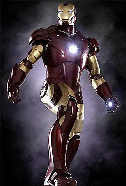

Iron Man
Tony Stark is a billionaire inventor and founding member of the Avengers.
Character Overview
Anthony Edward Stark first appeared in Tales of Suspense #39 in 1963. After being captured during a weapons demonstration, Stark created a powered armor suit to escape captivity. He later refined this technology to protect the world as Iron Man.
In the Marvel Cinematic Universe, Iron Man launched the MCU in 2008 and became one of the central leaders of the Avengers.
Powers and Abilities
- Genius-level intellect and engineering expertise
- Advanced powered armor suit
- Supersonic flight capability
- Repulsor blast energy weapons
- Artificial intelligence integration